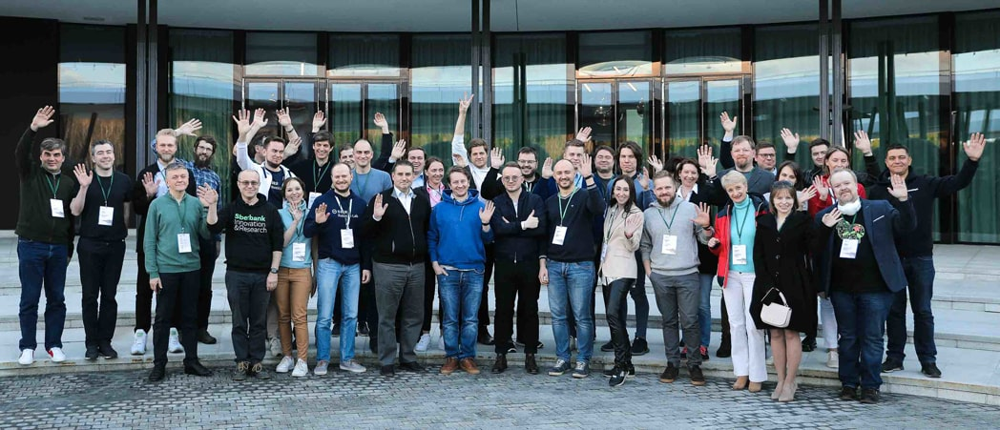
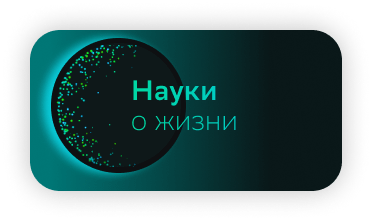
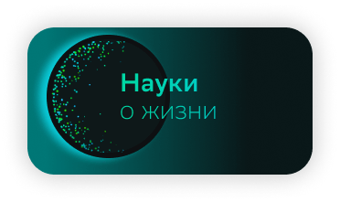

Наука в Сбере 2021
Исторически научная школа России считается одной из сильнейших в мире. В Сбере мы аккумулировали лучшие умы по cтратегически важным для нас научно-технологическим направлениям. При этом мы тесно сотрудничаем с ведущими российскими институтами и научными центрами. Синергия между научным сообществом и бизнесом создает хорошие предпосылки для технологических прорывов.
А чтобы поддержать деятелей науки, мы учредили собственную ежегодную Научную премию Сбера.

Наука и бизнес
Сбер — уже давно не просто банк, а большая технологическая компания с мощным R&D-направлением. Именно результаты наших исследований и разработок лежат в основе нашей конкурентоспособности. Повышаем ли мы эффективность собственных бизнес-процессов, выводим ли на рынок новые продукты для розничных или корпоративных клиентов, разрабатываем ли решения для трансформации целых отраслей экономики – каждый наш шаг опирается на достижения многих тысяч наших инженеров, учёных лабораторий и исследовательских центров, партнёров в ведущих университетах и научных институтах. И я искренне благодарен им за это!
В 2021 году Сбер стал лучшим цифровым розничным банком в мире по версии Global Finance. Наш клиент не знает, да и не должен знать имён тех, чей труд стоит за лучшими в мире цифровыми сервисами, которыми он пользуется. Но мы знаем всех и гордимся каждым.
За неполный 2021 год учёные и разработчики Сбера получили более 90 патентов на изобретения, опубликовали и представили к публикации 77 научных работ в ведущих мировых журналах и на международных конференциях уровня A и A*, получили множество разнообразных премий, а под завершение года заняли первые места в международных конкурсах, которые проводились на крупнейшей мировой конференции NeurIPS, показав лучшие результаты в обучении нейросетей решению сложнейших задач реального мира.
Не сомневаюсь, что с такой командой и с той атмосферой постоянного научного поиска и творческой свободы, которая царит в Сбере, нам любые вызовы по плечу. Уверен, что в 2022 году мы станем свидетелями новых побед наших учёных, новых пионерских публикаций и изобретений, внедрения новых прорывных идей в технологии и продукты Сбера.
Александр Ведяхин
Первый заместитель Председателя Правления Сбербанка
Основные научные
Партнеры сбера


Наука в Сбере
Сбер сегодня – это передовая технологическая компания. Здесь работают исследователи и инженеры, обеспечивающие конкурентное превосходство нашим платформам, продуктам и сервисам. Результаты прикладных разработок – на виду. Они приносят реальную пользу клиентам, повышая эффективность компаний экосистемы Сбера, защищены патентами, отмечены национальными и еждународными премиями. Наши open-source продукты все шире используются сообществами разработчиков по всему миру.
Но мы смотрим и за горизонт! Поисковые исследования позволяют лучше понять, с какими вызовами и возможностями наши команды столкнутся в будущем.
Исследования идут и инновации внедряются во всей Группе Сбер, и в наших командах исследователей работают лучшие из лучших. Полученные ими прикладные результаты очень часто имеют и значительную степень подлинно научной новизны. Поэтому статьи наших коллег регулярно публикуются в ведущих международных научных журналах. Мы активно наращиваем один из важнейших активов Группы — интеллектуальную собственность: к декабрю 2021 года наши инженеры получили 226 патентов, и их число постоянно растет. 5 наших изобретений отнесены Роспатентом к лучшим изобретениям России. Всего в 2021 г. нашими исследователями было опубликовано и направлено для публикации более 70 научных работ в ведущих рецензируемых научных журналах за рубежом и в России.
Мы занимаемся исследованиями и инновациями как силами собственных команд, так и объединяя свои усилия с ведущими вузами, исследовательскими центрами и технологическими партнерами по всему миру. Совместные исследования Сбера и университетов расширяют наши возможности по созданию технологического конкурентного преимущества — вместе мы достигаем большего результата за меньшее время. В текущем году мы запустили новые совместные исследования с Российским квантовым центром, Сколтехом, ВШЭ, МФТИ, МИЭМ, МГУ, МИСиС, РЭШ, Институтами океанологии, географии и вычислительной математики РАН.
Около года назад мы задумались о том, чтобы сделать следующий шаг в поддержке фундаментальных исследований, которые остро необходимы для создания национального конкурентного преимущества. Результатом стал запуск Научной премии Сбера. Лауреаты в трех номинациях — «Физические науки», «Цифровая вселенная» и «Науки о жизни» будут объявлены в марте 2022 года.
Взаимодействуя с ведущими учеными и практиками, нельзя не понять: мир науки и корпораций сегодня меняется на глазах. Сокращается дистанция между фундаментальными научными открытиями и прикладными результатами, приводящими к новым продуктам и новой конкурентоспособности: то, что сегодня наука, завтра уже технология, а послезавтра — продукт.
Мир стал существенно сложнее. И в этом мире «новой сложности» место Сбера определяется его 180-летней историей, неразрывно связанной с развитием экономики России, и новыми вызовами, стоящими перед большой технологической компанией. Корпоративные разработки — залог завтрашней конкурентоспособности, а исследования — способности к выживанию. Исследователи Сбера вносят в эту работу существенный вклад.
В этом сборнике мы привели основную информацию об опубликованных работах исследователей Сбера, рассказали о Научной премии и результатах прогнозных исследований, а также представили ведущих научных партнеров.
Верим, что новый сборник «Наука в Сбере 2021» окажется интересным и полезным чтением!
Альберт Ефимов
канд. филос. наук, Вице-президент — директор управления
исследований и инноваций, Сбербанк
Читать полностью
Научная премия в Сбере
В 2021 году Сбер учредил Научную премию Сбера в области науки и технологий, являющейся признанием достижений и поощрением научной смелости. Премия присуждается в трех номинациях.
Читать о премии
 
Совместные проекты

В 2021 г. лаборатория Интернета вещей и Московский институт электроники и математики (в составе Высшей школыэкономики) совместно исследовали технические особенности и возможности различных протоколов беспроводной связи (как наземной, так и спутниковой) и создали экспериментальную установку для определения возможностей использования современных телекоммуникационных технологий в интересах перспективных проектов Сбера

Совместно с Российским квантовым центром Управление исследований и инноваций разрабатывает методики оценки влияния квантовых технологий на бизнес высокотехнологических и финансовых компаний. Массовое внедрение квантовых вычислений в бизнес состоится не сегодня и не завтра, но последствия могут оказаться настолько радикальными, что готовиться к «квантовой революции» следует уже сейчас.
Сколтех и Сбер сотрудничают сразу по многим направлениям. Уже разработана система для аналитического восстановления неочевидных связей между клиентами банка. Результаты работы используются для уточнения модели кредитного скоринга и обнаружения мошенничества. Для серверов разработана система предсказания аномалий. Кроме того, создана модель прогнозирования нагрузки на серверы в высоконагруженный период для оптимизации стратегии наращивания серверных мощностей. Ведется работа по прогнозированию деградации со временем моделей машинного обучения по историческим данным валидации. В 2021 году дан старт проекту по разработке перспективных элементов питания — батареек для микроэлектронных устройств.
Исследовательские центры
В начале ноября 2021 года Сбер стал индустриальным партнером трех исследовательских центров в сфере искусственного интеллекта. Вместе с ведущими университетскими командами страны до конца 2024 года планируется проведение исследований, результаты которых будут использованы в технологиях и продуктах Сбера.
Благодаря поддержке Сбера три ведущих университета страны смогут получить дополнительно порядка 2,7 млрд рублей субсидий от государства на развитие перспективных проектов с применением искусственного интеллекта
Исторически научная школа России считается одной из сильнейших в мире. В Сбере мы аккумулировали лучшие умы по cтратегически важным для нас научно-технологическим направлениям. При этом мы тесно сотрудничаем с ведущими российскими институтами и научными центрами. Синергия между научным сообществом и бизнесом создает хорошие предпосылки для технологических прорывов.
А чтобы поддержать деятелей науки, мы учредили собственную ежегодную Научную премию Сбера.
Содержимое. Библиотека блоков.